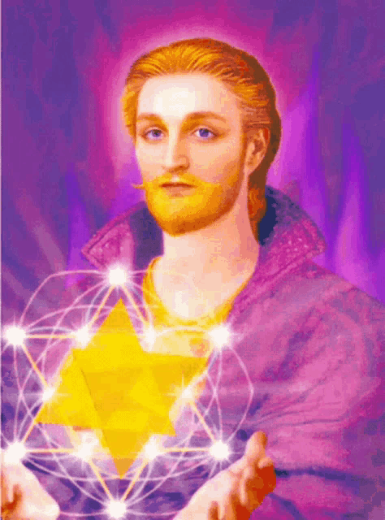

🔮 ПРОСВЕТЛЕНИЕ 🔮
ВЫ МОЖЕТЕ НАСЛАДИТЬСЯ ЭТОЙ КАРТИНКОЙ

"Трансмутация сознания начинается с одного взгляда..."
🎵
Слушайте таинственную музыку просветления
🎵
Длительность: 1 минута полного погружения в тайны Зоны
← ВЕРНУТЬСЯ К МУДРОСТИ АЛХИМИКА
 🔮 ПРОСВЕТЛЕНИЕ 🔮
🔮 ПРОСВЕТЛЕНИЕ 🔮
 🔮 ПРОСВЕТЛЕНИЕ 🔮
🔮 ПРОСВЕТЛЕНИЕ 🔮